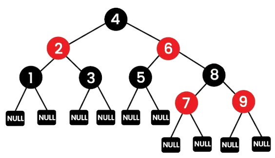
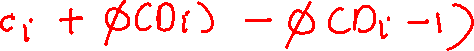
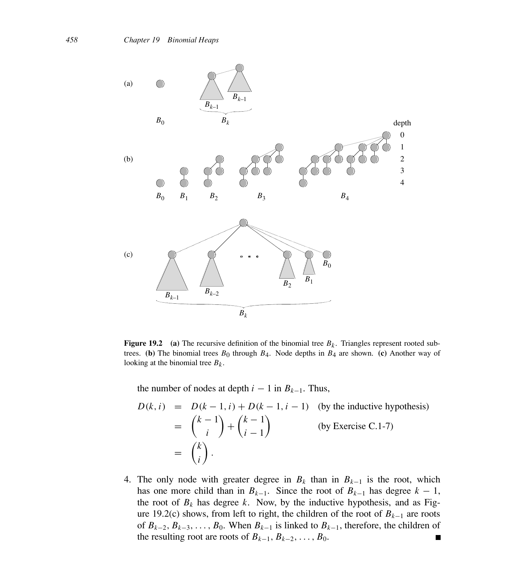

Chapter 4: Complete DAA Notes: Unit 4 — Red-Black Trees, Amortised Analysis & Binomial Heaps¶
Course Code: 3CS501CC24 Primary Source: DAA_Unit4.pptx, Amortised Analysis.pptx, Binomial Heap.pdf
1. Chapter Overview¶
This unit covers advanced data structures and their analysis methods. We begin with Red-Black Trees, a self-balancing binary search tree that guarantees \(O(\log n)\) bounds on basic operations, effectively preventing the skewed tree performance issues of standard BSTs. Next, we explore Amortised Analysis, a technique for evaluating the average performance of a sequence of operations over time rather than a single worst-case operation. Finally, we discuss Binomial Heaps, a mergeable heap data structure that supports efficient \(O(\log n)\) union operations by utilizing a forest of Binomial Trees.
2. Motivation: Why Red-Black Trees?¶
Binary search trees (BSTs) are fundamental data structures, but their performance heavily depends on the tree's shape. - Problem with unbalanced BST: If elements are inserted in a sorted or nearly sorted order, a standard BST becomes highly unbalanced (skewed). In the worst case, it resembles a linked list, degrading the time complexity for search, insertion, and deletion from \(O(\log n)\) to \(O(n)\). - Need for balanced BSTs: To ensure efficient operations regardless of the insertion order, we need trees that automatically adjust their structure to remain balanced. - Red-Black Tree as a solution: Red-Black Trees are a type of self-balancing binary search tree. By adding a single color attribute (RED or BLACK) to each node and enforcing a strict set of rules, the tree guarantees that no path from the root to a leaf is more than twice as long as any other. This structural guarantee ensures that the tree height remains \(O(\log n)\), keeping search, insertion, and deletion operations highly efficient.
[Source: DAA_Unit4.pptx, Slide 2]
3. Definition: Red-Black Tree¶
A Red-Black Tree is a self-balancing binary search tree where each node has an additional attribute: a color, which can be either RED or BLACK. The color-coding scheme acts as a set of constraints that force the tree to maintain its balance during dynamic operations.
The 5 Red-Black Tree Properties¶
Every Red-Black tree must satisfy the following five properties: 1. Node Color: Every node is either RED or BLACK. 2. Root Property: The root of the tree is always BLACK. 3. Leaf Property: Every leaf (NIL node) is BLACK. (These NIL nodes are placeholders that do not store data, ensuring every physical node has two children). 4. Red Property: If a node is RED, both of its children must be BLACK. (This means there can be no two consecutive RED nodes on any path). 5. Black-Height Property: All simple paths from any node to any of its descendant NIL leaves contain the same number of BLACK nodes.

Black-Height¶
- Definition: The black-height of a node \(x\), denoted as \(bh(x)\), is the number of BLACK nodes on any simple path from \(x\) (not including \(x\) itself) down to a leaf. Due to property 5, this value is well-defined.
- Lemma: A Red-Black tree with \(n\) internal nodes has a height \(h \leq 2 \cdot \log(n+1)\).
- Proof sketch:
- The subtree rooted at any node \(x\) contains at least \(2^{bh(x)} - 1\) internal nodes.
- Because of the Red Property, at least half the nodes on any path from the root to a leaf (excluding the root) must be BLACK. Thus, the black-height of the root must be at least \(h/2\).
- Therefore, \(n \geq 2^{h/2} - 1\), which algebraically implies \(h \leq 2 \cdot \log(n+1)\).
[Source: DAA_Unit4.pptx, Slide 3]
4. Red-Black Trees vs AVL Trees¶
| Feature | Red-Black Tree | AVL Tree |
|---|---|---|
| Balance strictness | Less strictly balanced. Path lengths can differ by up to a factor of 2. | More strictly balanced. Path lengths differ by at most 1. |
| Height bound | \(h \leq 2 \log(n+1)\) | \(h \approx 1.44 \log n\) |
| Insertion Rotations | Max 2 rotations per insertion. | Max 2 rotations per insertion. |
| Deletion Rotations | Max 3 rotations per deletion. | Up to \(O(\log n)\) rotations per deletion. |
| Search Time | Fast \(O(\log n)\), but slightly slower than AVL. | Faster \(O(\log n)\) due to strict balance. |
| When to prefer | Frequent insertions and deletions (less rotation overhead). Standard in library maps (e.g., C++ std::map). |
Frequent lookups/searches and less frequent modifications. |
[Source: DAA_Unit4.pptx, Slide 4]
5. Rotations¶
Rotations are local operations that change the tree's pointer structure without violating the binary search tree property. They are used during insertion and deletion to restore the Red-Black properties.
Left-Rotate(T, x)¶
- Before/after state: The right child \(y\) of \(x\) becomes the parent of \(x\). Node \(x\) becomes the left child of \(y\). The left child of \(y\) becomes the right child of \(x\).
- BST property preservation: The inorder traversal order remains identical.
LEFT-ROTATE(T, x)
1 y = x.right
2 x.right = y.left
3 if y.left != T.nil
4 y.left.parent = x
5 y.parent = x.parent
6 if x.parent == T.nil
7 T.root = y
8 elseif x == x.parent.left
9 x.parent.left = y
10 else x.parent.right = y
11 y.left = x
12 x.parent = y
Right-Rotate(T, y)¶
- Before/after state: The left child \(x\) of \(y\) becomes the parent of \(y\). Node \(y\) becomes the right child of \(x\). The right child of \(x\) becomes the left child of \(y\).
RIGHT-ROTATE(T, y)
1 x = y.left
2 y.left = x.right
3 if x.right != T.nil
4 x.right.parent = y
5 x.parent = y.parent
6 if y.parent == T.nil
7 T.root = x
8 elseif y == y.parent.right
9 y.parent.right = x
10 else y.parent.left = x
11 x.right = y
12 y.parent = x
[Source: DAA_Unit4.pptx, Slide 5]
6. Insertion¶
Inserting a node into a Red-Black tree involves a standard BST insertion followed by fixing any violations of the Red-Black properties.
Step 1: BST Insert + Color RED¶
We insert the new node \(z\) just like in a standard BST and color it RED. - Coloring it RED preserves the Black-Height property. - However, if \(z\)'s parent is also RED, it violates the Red Property (no consecutive RED nodes).
Step 2: RB-INSERT-FIXUP — ALL CASES¶
To resolve a RED-RED violation between \(z\) and \(z.parent\), we use the RB-INSERT-FIXUP procedure.
Loop Invariant: \(z\) is RED. If \(z.parent\) is the root, then \(z.parent\) is BLACK. The only possible violation is that \(z\) and \(z.parent\) are both RED.
Assume \(z.parent\) is a left child of \(z.grandparent\). (If it's a right child, the cases are perfectly symmetrical). Let \(y\) be \(z\)'s uncle (the right child of \(z.grandparent\)).
Case 1 — Uncle is RED: - Condition: \(z\)'s uncle \(y\) is RED. - Action: Color \(z.parent\) BLACK, color \(y\) (uncle) BLACK, color \(z.grandparent\) RED, and move \(z\) up to point to \(z.grandparent\). - Why: Since \(z\) and \(z.parent\) are both RED, we can push the RED color up to the grandparent. Coloring the parent and uncle BLACK restores the Red Property locally and preserves the black-height. The violation may now occur between the grandparent and the great-grandparent, so we iterate.
Case 2 — Uncle is BLACK, z is inner child (triangle):
- Condition: Uncle \(y\) is BLACK, and \(z\) is the right child of a left-child parent (forms a "kink" or triangle).
- Action: Set \(z = z.parent\), and perform LEFT-ROTATE(T, z).
- Why: This rotation straightens the "bend", converting it into Case 3 without altering the black-height.
Case 3 — Uncle is BLACK, z is outer child (line):
- Condition: Uncle \(y\) is BLACK, and \(z\) is the left child of a left-child parent (forms a straight line).
- Action: Color \(z.parent\) BLACK, color \(z.grandparent\) RED, and perform RIGHT-ROTATE(T, z.grandparent).
- Why: The rotation structurally balances the tree. The recoloring restores the Red Property and ensures the black-height is consistent on all paths. The loop terminates after this case.
RB-INSERT pseudocode¶
RB-INSERT(T, z)
1 y = T.nil
2 x = T.root
3 while x != T.nil
4 y = x
5 if z.key < x.key
6 x = x.left
7 else x = x.right
8 z.parent = y
9 if y == T.nil
10 T.root = z
11 elseif z.key < y.key
12 y.left = z
13 else y.right = z
14 z.left = T.nil
15 z.right = T.nil
16 z.color = RED
17 RB-INSERT-FIXUP(T, z)
RB-INSERT-FIXUP pseudocode¶
RB-INSERT-FIXUP(T, z)
1 while z.parent.color == RED
2 if z.parent == z.parent.parent.left
3 y = z.parent.parent.right
4 if y.color == RED
5 z.parent.color = BLACK // Case 1
6 y.color = BLACK // Case 1
7 z.parent.parent.color = RED // Case 1
8 z = z.parent.parent // Case 1
9 else
10 if z == z.parent.right
11 z = z.parent // Case 2
12 LEFT-ROTATE(T, z) // Case 2
13 z.parent.color = BLACK // Case 3
14 z.parent.parent.color = RED // Case 3
15 RIGHT-ROTATE(T, z.parent.parent) // Case 3
16 else (same as then clause with "right" and "left" exchanged)
17 T.root.color = BLACK
Case Decision Table for Insertion¶
| Situation | Uncle Color | \(z\) Position | Action | Next Step |
|---|---|---|---|---|
| Case 1 | RED | Inner or Outer | Recolor Parent, Uncle to BLACK. Grandparent to RED. | Move \(z\) to Grandparent, check again. |
| Case 2 | BLACK | Inner (Triangle) | Rotate Parent in opposite direction of \(z\)'s side. | Proceeds directly to Case 3. |
| Case 3 | BLACK | Outer (Line) | Recolor Parent to BLACK, Grandparent to RED. Rotate Grandparent. | Terminates. |
Complete Insertion Trace¶
Sequence: 10, 20, 30, 15, 25
1. Insert 10: Root, colored BLACK.
2. Insert 20: Inserted as right child of 10. Colored RED. No fixup needed.
3. Insert 30: Inserted as right child of 20. Colored RED. (Violation!). Uncle of 30 is NIL (BLACK). 30 is an outer right child. (Mirror of Case 3). Right child of right child. Action: Left-rotate around 10. Recolor 20 to BLACK, 10 to RED. Tree: 20(B) is root, 10(R) is left, 30(R) is right.
4. Insert 15: Inserted as right child of 10. Colored RED. (Violation!). Uncle of 15 is 30(RED). (Case 1). Action: Recolor 10, 30 to BLACK. Recolor 20 to RED. 20 is root, so recolored BLACK at the end.
5. Insert 25: Inserted as left child of 30. Colored RED. (Violation!). Uncle of 25 is 10(BLACK). 25 is left child of right child (Mirror of Case 2). Action: Right-rotate around 30. Then it becomes right child of right child (Mirror of Case 3). Recolor 25 BLACK, 30 RED, Left-rotate around 25.
[Source: DAA_Unit4.pptx, Slides 6-7]
7. Deletion¶
Deleting a node from a Red-Black tree is structurally similar to BST deletion, with the addition of restoring properties.
Overview: BST Delete + Transplant + FIXUP¶
- Find the node to delete (\(z\)). If \(z\) has two children, its successor \(y\) takes its place.
- The color of the removed or moved node determines if properties are violated. If the removed node was RED, no properties are violated (black-height is unaffected, no adjacent REDs created, root is still black).
- If the removed node was BLACK, the black-height property is violated. We track a node \(x\) that replaces the deleted node. Node \(x\) takes on an "extra" unit of blackness, making it a "double-black" node. We must eliminate this double blackness using
RB-DELETE-FIXUP.
RB-TRANSPLANT pseudocode¶
RB-TRANSPLANT(T, u, v)
1 if u.parent == T.nil
2 T.root = v
3 elseif u == u.parent.left
4 u.parent.left = v
5 else u.parent.right = v
6 v.parent = u.parent
RB-DELETE pseudocode¶
(Note: Omitted full standard BST delete boilerplate for brevity, focuses on color tracking)
Let \(y\) be the node actually removed or moved, and \(x\) be the node that moves into \(y\)'s original position. If \(y\)'s original color was BLACK, we call RB-DELETE-FIXUP(T, x).
RB-DELETE-FIXUP — ALL CASES (for double-black node x)¶
Assume \(x\) is the left child of its parent. Let \(w\) be \(x\)'s sibling (\(w = x.parent.right\)). We want to push the double-blackness up the tree until we reach the root or a RED node, or we can balance it out.
Case 1 — Sibling w is RED:
- Condition: \(w\) (sibling of \(x\)) is RED.
- Action: Color \(w\) BLACK, color \(x.parent\) RED, and LEFT-ROTATE(T, x.parent). Update \(w\) to be the new sibling.
- Why: This changes \(x\)'s sibling to a BLACK node without changing the black-height. This transforms Case 1 into Case 2, 3, or 4.
Case 2 — Sibling w is BLACK, both w's children are BLACK: - Condition: \(w\) is BLACK, \(w.left\) is BLACK, and \(w.right\) is BLACK. - Action: Color \(w\) RED, move \(x\) up to \(x.parent\). - Why: We remove one unit of blackness from \(x\) and one unit from \(w\), pushing the extra blackness up to the parent. If the parent was RED, it becomes BLACK, and the double-black resolves. If it was BLACK, it becomes double-black, and we iterate.
Case 3 — Sibling w is BLACK, w's near child is RED, far child is BLACK:
- Condition: \(w\) is BLACK, \(w.left\) (near) is RED, \(w.right\) (far) is BLACK.
- Action: Color \(w.left\) BLACK, color \(w\) RED, and RIGHT-ROTATE(T, w). Update \(w\) to be the new sibling.
- Why: This shifts the RED child to the "far" side, transforming Case 3 into Case 4, without altering black-heights.
Case 4 — Sibling w is BLACK, w's far child is RED:
- Condition: \(w\) is BLACK, \(w.right\) (far) is RED.
- Action: Color \(w\) to match \(x.parent\)'s color, color \(x.parent\) BLACK, color \(w.right\) BLACK, and LEFT-ROTATE(T, x.parent). Set \(x = T.root\).
- Why: This rotation and recoloring perfectly absorbs the extra blackness from \(x\) into the tree structure. The double-black is resolved, and the loop terminates.
RB-DELETE-FIXUP pseudocode¶
RB-DELETE-FIXUP(T, x)
1 while x != T.root and x.color == BLACK
2 if x == x.parent.left
3 w = x.parent.right
4 if w.color == RED
5 w.color = BLACK // Case 1
6 x.parent.color = RED // Case 1
7 LEFT-ROTATE(T, x.parent) // Case 1
8 w = x.parent.right // Case 1
9 if w.left.color == BLACK and w.right.color == BLACK
10 w.color = RED // Case 2
11 x = x.parent // Case 2
12 else
13 if w.right.color == BLACK
14 w.left.color = BLACK // Case 3
15 w.color = RED // Case 3
16 RIGHT-ROTATE(T, w) // Case 3
17 w = x.parent.right // Case 3
18 w.color = x.parent.color // Case 4
19 x.parent.color = BLACK // Case 4
20 w.right.color = BLACK // Case 4
21 LEFT-ROTATE(T, x.parent) // Case 4
22 x = T.root // Case 4
23 else (same as then clause with "right" and "left" exchanged)
24 x.color = BLACK
Case Decision Table for Deletion¶
| Case | Sibling Color | Sibling's Children | Action | Next |
|---|---|---|---|---|
| Case 1 | RED | (must be BLACK) | Recolor Sibling BLACK, Parent RED, Rotate Parent toward \(x\). | Proceed to Case 2, 3, or 4. |
| Case 2 | BLACK | Both BLACK | Recolor Sibling RED, move \(x\) to Parent. | Iterate or Terminate if Parent was RED. |
| Case 3 | BLACK | Near RED, Far BLACK | Recolor Near-Child BLACK, Sibling RED, Rotate Sibling away from \(x\). | Proceed to Case 4. |
| Case 4 | BLACK | Far RED | Swap colors, make Far-Child BLACK, Rotate Parent toward \(x\). | Terminate. |
Complete Deletion Trace¶
If we have a tree and delete a RED node, we simply remove it. If we delete a BLACK node, it causes double-blackness. Example: Deleting a BLACK leaf \(x\) whose sibling \(w\) is BLACK and has no RED children (Case 2). We color \(w\) RED. The double black moves to their parent. If the parent was RED, we color it BLACK and we are done.
[Source: DAA_Unit4.pptx, Slides 9-11]
8. Complexity Summary¶
Because the height of a Red-Black tree is mathematically constrained to \(O(\log n)\), the worst-case running times for all standard dynamic set operations are guaranteed to be logarithmic.
| Operation | Time Complexity |
|---|---|
| Search | \(O(\log n)\) |
| Insert | \(O(\log n)\) |
| Delete | \(O(\log n)\) |
| Min/Max | \(O(\log n)\) |
[Source: DAA_Unit4.pptx, Slide 4]
9. Amortised Analysis¶
What is Amortised Analysis?¶
Amortised analysis is a technique used in algorithm analysis to calculate the average cost of operations over a worst-case sequence of operations. Unlike average-case analysis, which relies on probability and input distribution, amortised analysis guarantees the average performance of each operation in the worst-case sequence.
When to Use (vs per-operation worst case)¶
It is used when a data structure occasionally performs a very expensive operation, but this expensive operation is rare and is "paid for" by a large number of preceding cheap operations. A classic example is a dynamic array (like std::vector or ArrayList).
Method 1 — Aggregate Method¶
- Definition: We mathematically determine an upper bound \(T(n)\) on the total cost of a sequence of \(n\) operations. The amortised cost is simply the total cost divided by \(n\): \(T(n) / n\).
- Example: Binary counter. A \(k\)-bit counter starts at 0. Incrementing it flips bits. A single increment could flip \(k\) bits (worst-case \(O(k)\)). But in a sequence of \(n\) operations, the lowest bit flips \(n\) times, the second lowest \(n/2\) times, the third \(n/4\) times, etc. Total flips \(\leq 2n\). Amortised cost per increment = \(2n / n = 2 = O(1)\).
Method 2 — Accounting Method¶
- Approach: We assign artificial "amortised costs" to operations. When the amortised cost is higher than the actual cost, the difference is saved as "credit". When the amortised cost is lower than the actual cost, the operation uses the stored credit to pay for the difference.
- Rule: The total credit must never go negative. \(\sum \text{amortised} \geq \sum \text{actual}\).
- Example: Dynamic array. Assign an amortised cost of 3 to each insertion. Actual cost of regular insertion is 1. We store 2 credits. When the array doubles, we use the stored credits to pay for moving elements.
Method 3 — Potential Method¶
- Definition: Instead of associating credit with specific elements, we associate "potential energy" with the data structure as a whole.
- Potential function \(\Phi\): Maps the data structure state \(D_i\) to a non-negative real number \(\Phi(D_i)\). Represents stored energy.
- Amortised cost formula: \(\hat{c}_i = c_i + \Phi(D_i) - \Phi(D_{i-1})\) (where \(\hat{c}_i\) is amortised cost, \(c_i\) is actual cost).
- Rule: If \(\Phi(D_n) \geq \Phi(D_0)\), the sum of amortised costs bounds the sum of actual costs.
- Dynamic array doubling analysis:
- Let \(\Phi(D_i) = 2 \cdot (\text{number of elements}) - \text{current capacity}\).
- Initial: \(\Phi(D_0) = 0\).
- Case 1 (No resize): \(c_i = 1\). \(\Delta\Phi = (2(k+1) - n) - (2k - n) = 2\). Amortised cost \(\hat{c}_i = 1 + 2 = 3\).
- Case 2 (Resize from \(n\) to \(2n\)): \(c_i = n + 1\). \(\Delta\Phi = (2(n+1) - 2n) - (2n - n) = 2 - n\). Amortised cost \(\hat{c}_i = (n + 1) + 2 - n = 3\).
- Since the amortised cost is a constant 3, the amortised time for insertion is \(O(1)\).

Comparison Table¶
| Method | Approach | When to Use |
|---|---|---|
| Aggregate | Global total sum divided by \(n\) | When total cost of sequence is easy to calculate directly. |
| Accounting | Assign artificial charges, store credit on specific items | When different operations have varying costs and you can assign credit to objects. |
| Potential | Define a global state function \(\Phi\) | When state changes cleanly model the accumulated "debt" or "credit". |
[Source: Amortised Analysis.pptx, Slides 2-10]
10. Binomial Heaps¶
A binomial heap is a collection of binomial trees. It provides a highly efficient UNION (merge) operation, significantly outperforming a standard binary heap.
Mergeable Heap Operations¶
A mergeable heap supports the standard priority queue operations plus a UNION operation.
| Operation | Description |
|---|---|
| MAKE-HEAP | Creates an empty heap. |
| INSERT(H, x) | Inserts node \(x\) into heap \(H\). |
| MINIMUM(H) | Returns a pointer to the minimum node in \(H\). |
| EXTRACT-MIN(H) | Deletes and returns the minimum node from \(H\). |
| UNION(H1, H2) | Merges \(H_1\) and \(H_2\) into a new heap. |
Comparison: Binary vs Binomial vs Fibonacci Heap¶
| Procedure | Binary Heap (worst-case) | Binomial Heap (worst-case) | Fibonacci Heap (amortised) |
|---|---|---|---|
| MAKE-HEAP | \(O(1)\) | \(O(1)\) | \(O(1)\) |
| INSERT | \(O(\log n)\) | \(O(\log n)\) | \(O(1)\) |
| MINIMUM | \(O(1)\) | \(O(\log n)\) | \(O(1)\) |
| EXTRACT-MIN | \(O(\log n)\) | \(O(\log n)\) | \(O(\log n)\) |
| UNION | \(O(n)\) | \(O(\log n)\) | \(O(1)\) |
| DECREASE-KEY | \(O(\log n)\) | \(O(\log n)\) | \(O(1)\) |
| DELETE | \(O(\log n)\) | \(O(\log n)\) | \(O(\log n)\) |
Binomial Tree \(B_k\)¶
A Binomial Tree is an ordered tree defined recursively. - Recursive definition: \(B_0\) consists of a single node. \(B_k\) consists of two \(B_{k-1}\) trees linked together: the root of one is the leftmost child of the root of the other. - Properties of \(B_k\): 1. Contains exactly \(2^k\) nodes. 2. The height of the tree is \(k\). 3. There are exactly \(\binom{k}{i}\) nodes at depth \(i\). 4. The root has degree \(k\), which is the maximum degree in the tree. - Corollary: The maximum degree in an \(n\)-node binomial heap is \(\lfloor \log n \rfloor\).

Binomial Heap Structure¶
A binomial heap \(H\) is a set of binomial trees that satisfies: 1. Min-Heap Property: Every binomial tree in \(H\) obeys the min-heap property. 2. Uniqueness Property: For any non-negative integer \(k\), there is at most ONE binomial tree in \(H\) whose root has degree \(k\).
Because of the uniqueness property, an \(n\)-node binomial heap consists of at most \(\lfloor \log n \rfloor + 1\) trees. The trees present correspond to the binary representation of \(n\).
All Operations (pseudocode + complexity)¶
- MAKE-BINOMIAL-HEAP: Returns empty heap. Time: \(O(1)\).
- BINOMIAL-HEAP-MINIMUM: Traverses the roots of all trees. Since there are at most \(\log n\) trees, Time: \(O(\log n)\).
- BINOMIAL-LINK(y, z): Makes node \(y\) the leftmost child of \(z\). Used to link two \(B_{k-1}\) trees. Time: \(O(1)\).
- BINOMIAL-HEAP-UNION: Analogue to binary addition. Merges root lists, then walks through and links trees of the same degree (handling carry).
- Iterates over at most \(2 \log n\) roots.
- Time: \(O(\log n)\).
- BINOMIAL-HEAP-INSERT: Creates a new heap with 1 node (\(B_0\)) and performs UNION. Time: \(O(\log n)\).
- BINOMIAL-HEAP-EXTRACT-MIN: Finds root with min key, removes it, reverses the list of its children to form a new binomial heap, and UNIONs it with the remaining heap. Time: \(O(\log n)\).
- BINOMIAL-HEAP-DECREASE-KEY: Updates the key, then "bubbles up" the value along the parent pointers until min-heap property is restored. Max depth is \(\log n\). Time: \(O(\log n)\).
- BINOMIAL-HEAP-DELETE(H, x):
Time: \(O(\log n)\).
BINOMIAL-HEAP-DELETE(H, x) 1 BINOMIAL-HEAP-DECREASE-KEY(H, x, -\infty) 2 BINOMIAL-HEAP-EXTRACT-MIN(H)
[Source: Binomial Heap.pdf, Pages 1-21]
11. Formula Sheet¶
- Red-Black Tree Height Bound: \(h \leq 2 \log(n+1)\)
- Internal Nodes given Black-Height: Subtree rooted at \(x\) has \(\geq 2^{bh(x)} - 1\) internal nodes.
- Potential Method Formula: \(\hat{c}_i = c_i + \Phi(D_i) - \Phi(D_{i-1})\)
- Binomial Tree Nodes: \(|B_k| = 2^k\)
- Nodes at depth \(i\) in \(B_k\): \(\binom{k}{i} = \frac{k!}{i!(k-i)!}\)
- Max degree in Binomial Heap: \(\lfloor \log n \rfloor\)
12. Definition Sheet¶
- Red-Black Tree: A self-balancing binary search tree where nodes are colored red or black, enforcing path length constraints to ensure \(O(\log n)\) balance.
- Black-Height \(bh(x)\): The number of black nodes on any simple path from node \(x\) to a leaf.
- Amortised Analysis: A methodology used to analyze the average cost of operations over a sequence, guaranteeing performance bounds without relying on probability.
- Potential Function \(\Phi\): A mathematical function mapping the state of a data structure to a non-negative real number, acting as stored energy to pay for expensive operations.
- Binomial Tree \(B_k\): A recursive tree structure of order \(k\) formed by linking two binomial trees of order \(k-1\).
- Binomial Heap: A collection of binomial trees that satisfies min-heap properties and contains at most one tree of any given degree.
13. Exam-Oriented Review¶
- Why is a Red-Black Tree preferred over an AVL tree for systems requiring frequent insertions and deletions? Answer: AVL trees enforce a stricter balance (\(h \approx 1.44 \log n\)), meaning insertions and deletions frequently trigger multiple rotations to restore balance (up to \(O(\log n)\) rotations on delete). Red-Black trees require at most 2 rotations for insertion and 3 for deletion, reducing overhead for modification-heavy workloads.
- State the 5 properties of a Red-Black tree. Which property guarantees that the tree is balanced? Answer: 1. Every node is RED or BLACK. 2. Root is BLACK. 3. Leaves (NIL) are BLACK. 4. A RED node cannot have RED children. 5. Every path from a node to descendant leaves has the same black-height. Properties 4 and 5 together guarantee that the longest path is at most twice the shortest path.
- During RB-INSERT, what condition leads to Case 1, and how is it resolved? Answer: Case 1 occurs when the newly inserted RED node's uncle is also RED. It is resolved by recoloring the parent and uncle BLACK, the grandparent RED, and moving the active pointer up to the grandparent to check for further violations.
- Explain how double-blackness arises in RB-DELETE and what it signifies. Answer: If the node removed from the tree was BLACK, every path that passed through it is now missing one BLACK node, violating the black-height property. We conceptually assign an extra unit of "blackness" to the node that replaced it, creating a "double-black" node, which must be resolved via rotations/recoloring.
- What is Amortised Analysis and how does it differ from Average-Case Analysis? Answer: Amortised analysis guarantees the average performance of each operation in the worst-case sequence of operations. Average-case analysis relies on probabilistic assumptions about the input distribution.
- In the Potential Method, what does it mean if \(\Phi(D_i) - \Phi(D_{i-1})\) is negative? Answer: It means the actual cost of the operation was partially paid for by the stored potential (credit) in the data structure, resulting in an amortised cost that is lower than the actual cost.
- Define a Binomial Tree \(B_k\). How many nodes does it have? Answer: \(B_k\) is an ordered tree defined recursively. \(B_0\) is a single node. \(B_k\) is formed by linking two \(B_{k-1}\) trees. It has exactly \(2^k\) nodes.
- Explain the uniqueness property of a Binomial Heap and its implication. Answer: For any non-negative integer \(k\), there is at most one binomial tree of degree \(k\) in the heap. Because of this, an \(n\)-node binomial heap corresponds directly to the binary representation of \(n\), containing at most \(\lfloor \log n \rfloor + 1\) trees.
- How does the BINOMIAL-HEAP-UNION operation work?
Answer: It first merges the root lists of the two heaps into a single list sorted by degree. Then it walks through the list. If it finds two trees of the same degree \(k\), it uses
BINOMIAL-LINKto make the one with the larger root key a child of the other, forming a tree of degree \(k+1\). This is analogous to binary addition with carries. - What is the time complexity of the UNION operation in a Binary Heap vs a Binomial Heap? Answer: Binary Heap: \(O(n)\). Binomial Heap: \(O(\log n)\).